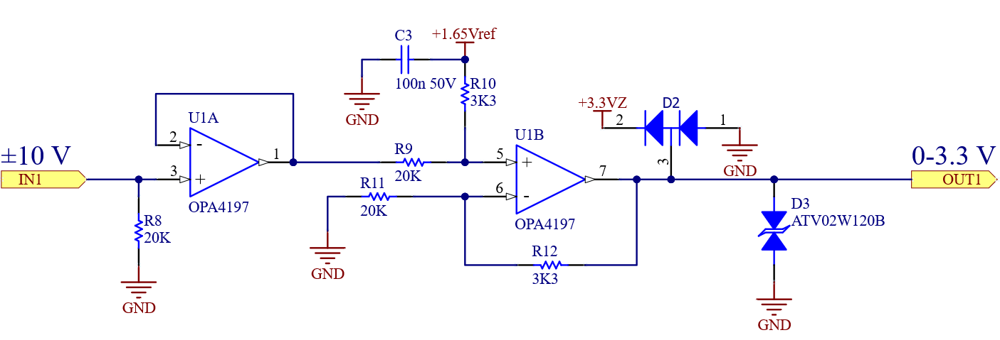
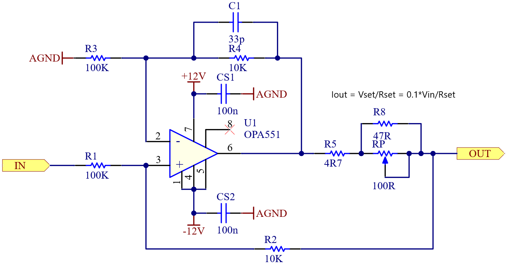
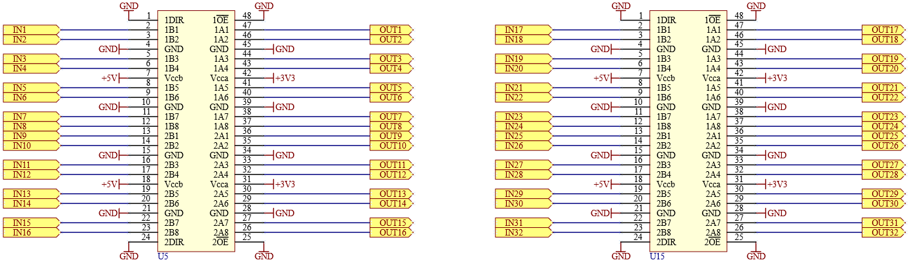
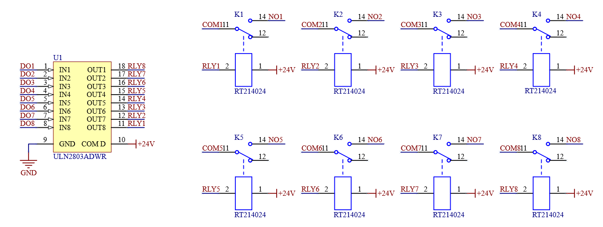
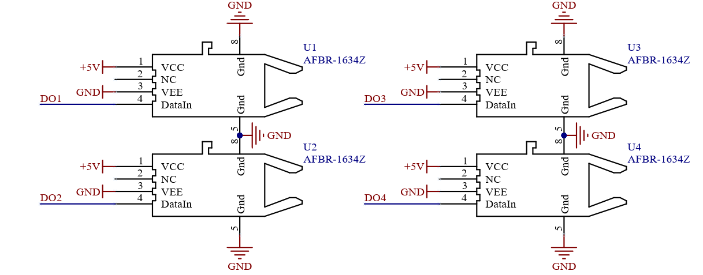

Board design tips
Recommendations for designing custom interface boards
Altium template
To start designing fast, you can find the source files for an example project, designed in Altium Designer, available for download here.
General tips
All IOs are protected against short circuit and overvoltage, typically via a series resistor and protection diodes. In the case of Analog and Digital Outputs, this affects the maximum output current. In practical terms, this means that Analog Outputs, as well as Digital Outputs, may require a driver, or a buffer, if you have a low impedance load. To check the maximum current available, please consult the Hardware Manual for your specific HIL device.
The Analog Input section has a relatively low input impedance (more details by HIL device in the Hardware Manual). Because of this, if the object under measurement is not low-impedance, a simple opamp buffer must be inserted in this signal chain.
The User PSU section features multiple voltage rails, and all of these rails feature overcurrent protection. However, you should never connect any kind of voltage source to the User PSU section, because none of these rails feature external overvoltage protection. So, to ensure a correct operation of your product, make sure that the current draw of your board does not exceed the maximum rating of the corresponding rail (more details by HIL device in the Hardware Manual), and make sure that no external voltage source is connected to the User PSU section. If any of these conditions are not met, an external PSU should be considered.
Mechanical
The recommended mechanical structure is based around a single PCB, which features two female, right-angle, DIN41612 connectors. Spaced at 2000 mil pin-to-pin distance (Figure 1), these connectors break out all signals from the HIL device, including the power supplies, eliminating the need for external power supplies.

Commonly used circuit blocks





Recommended material or supplies
| Part Number | Manufacturer | Description |
|---|---|---|
| 09732966801 | HARTING | Connector, DIN41612, right angle, female |
| FNS13-09600-00BF | Yamaichi | Connector, DIN41612, flat cable mount, female |
| 3849-96 | 3M | Flat cable, 96 conductor |
| OPA4197IPWR | Texas Instruments | Precision quad op-amp, TSSOP-14 |
| OPA4196IDR | Texas Instruments | Precision quad op-amp, SOIC-14 |
| OPA551FA/500G3 | Texas Instruments | Power op-amp, 200mA, DDPAK |
| SN74LVC16T245 | Texas Instruments | Digital level shifter, 16 channel, TSSOP-48 |
| ULN2803ADWR | Texas Instruments | Relay driver, 8 channel, SOIC-18 |
| TBD62083AFG,EL | Toshiba | Relay driver, 8 channel, SOIC-18 |
| IX4426N | IXYS | Gate driver, 2 channel, SOIC-8 |
| AFBR-1634Z | Broadcom | Fiber optic transmitter, vertical |
| AFBR-2634Z | Broadcom | Fiber optic receiver, vertical |